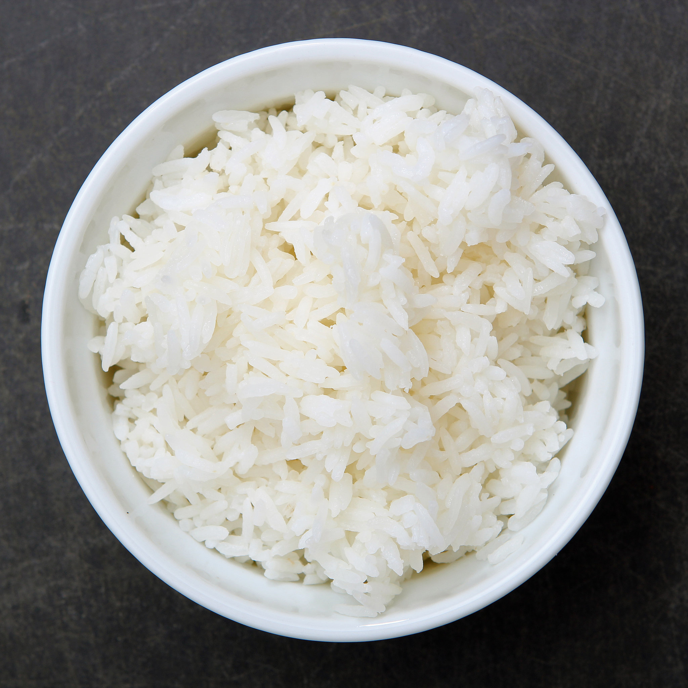

Home
Perfect Rice

This is how I make rice. Granted, I am white. But it turns out pretty good.
Ingredients
- An Instant Pot
- A bowl to wash rice in
- Short or medium grain rice, ideally from an Asian grocery store
Instructions
- Measure out your rice. I usually make 2 cups worth.
- In a medium mixing bowl, wash your rice: Add cold water until it's about double the height of the rice. Swish a clean hand around in there until the water is uniformly cloudy, then drain the water. Repeat until the water stays clear.
- Add the washed rice to the Instant Pot.
- Add the same amount of water as there is rice to the Instant Pot. So 2 cups rice, 2 cups water.
- Pressure cook for 3 minutes.
- Natural release for 10 minutes.
- Open the Instant Pot, fluff with a rice paddle, and serve.